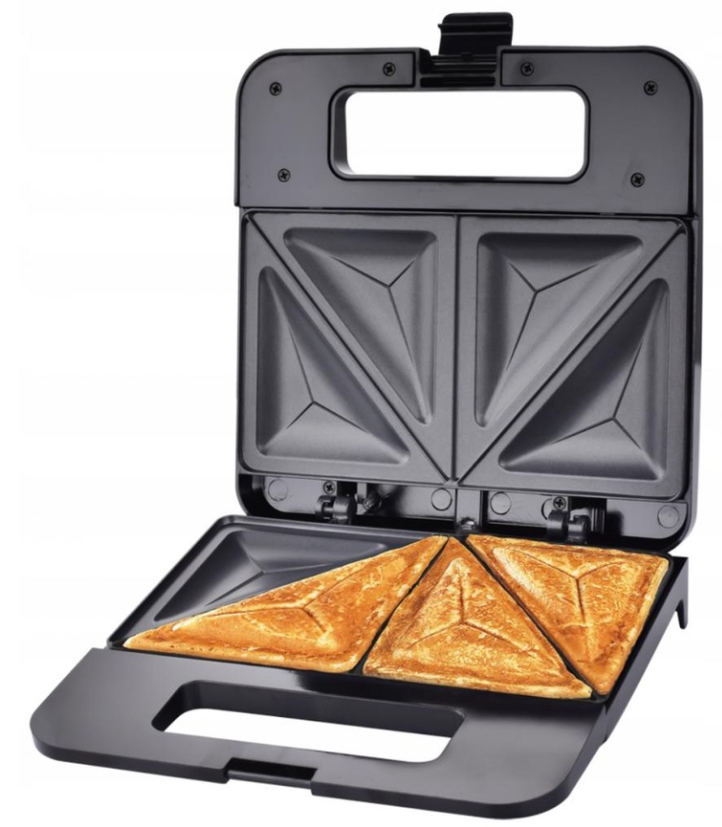

HITY TYGODNIA!
1.PIGGY PRODUCT JAIFEI!

Gadajta lepiej co wy tam robivice lol!?????? Czajnik elektryczny posiada regulację temperatury wody oraz funkcję utrzymania temperatury. Umożliwia gotowanie wody (100°C) oraz jej podgrzewanie w zakresie od 50°C do 90°C.
50200pln dostawa + podatki
2.160CM duża biała gęś pluszowa zabawka śliczna kaczka wypchana
❤❤Opis przedmiotu: 100% nowy i wysokiej jakościMateriał: miękki plusz i bawełna pp📐Rozmiar: 90-160 cm 🌟Uwaga:2. Ze względu na różnicę światła i ekranu, kolor może nieznacznie różnić się od tego na zdjęciach.3. Proszę pozwolić na różnicę 0,5-2 cm ze względu na pomiary ręczne.4. Dziękuję za zrozumienie.
250%$$ + neetoo
3.TOSTER OPIEKACZ DO KANAPEK TOSTÓW SANDWICH 1000W
TOSTER OPIEKACZ DO KANAPEK TOSTÓW SANDWICH 1000W Opiekacz do kanapek posiada płyty grzewcze powleczone warstwÄ… zapobiegajÄ…cÄ… przywieraniu. Można go łatwo wyczyścić nawet samym ręcznikiem papierowym.✔️SPECYFIKACJA:- Stan: nowy- Kolor: czarny- Wymiary produktu: 22,5cm x 22,3cm x 7,3cm- Moc: 1000W
darmo + dostawaa (25000pln #$)